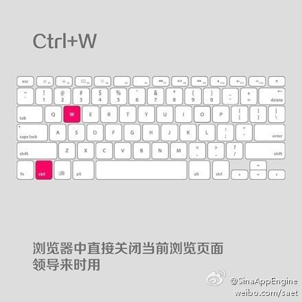
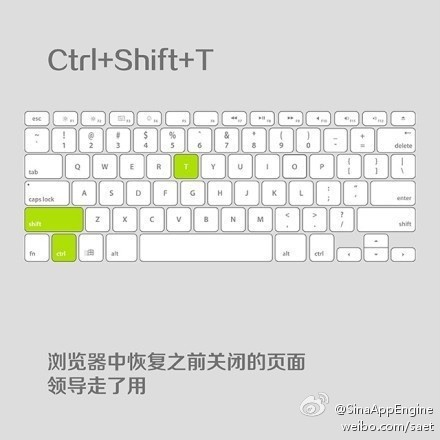
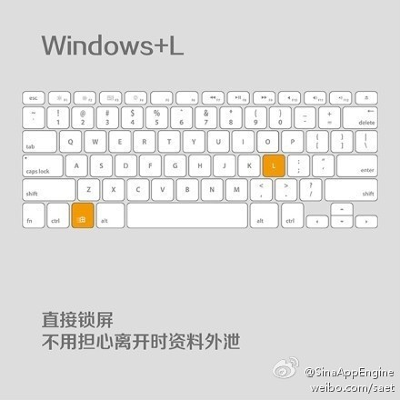
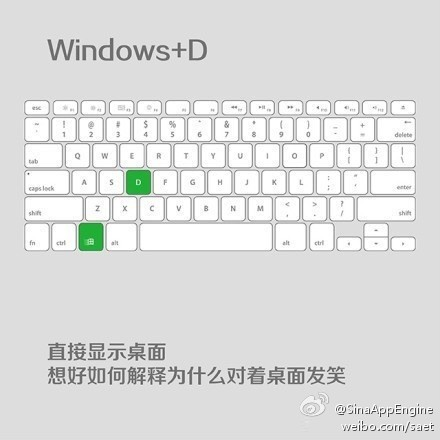
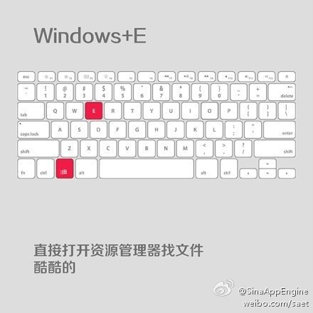
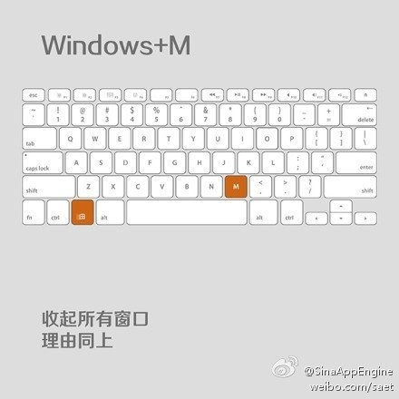
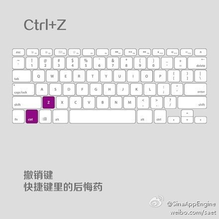
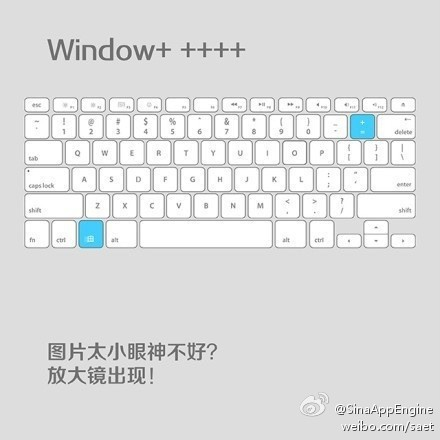
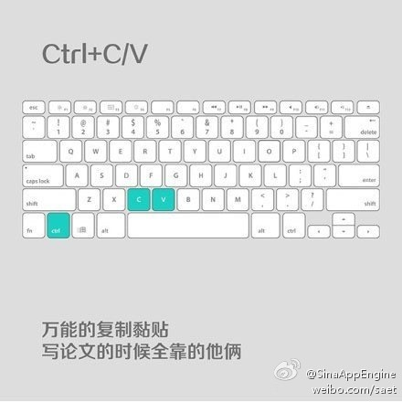

最も実用的な九大ショートカットキー、ぜひ覚えましょう！！！









プログラムの常用ショートカットキー
| 快捷键 | 功能描述 |
|---|---|
| F1 | 現在のプログラムまたはWindowsのヘルプ内容を表示します。 |
| F2 | ファイルを選択しているときに使うと、「名前の変更」を意味します |
| F3 | デスクトップ上で使うときは「検索：すべてのファイル」ダイアログを開きます |
| F10或ALT | 現在のプログラムのメニューバーをアクティブにします。 |
| windows键或CTRL+ESC | スタートメニューを開く |
| CTRL+ALT+DELETE | Win9xでプログラムを閉じるダイアログを開きます |
| DELETE | 選択した項目を削除します。ファイルの場合は、ごみ箱に入ります |
| SHIFT+DELETE | 選択した項目を削除します。ファイルの場合は、ごみ箱に入らず直接削除されます |
| CTRL+N | 新しいファイルを新規作成する |
| CTRL+O | 「ファイルを開く」ダイアログを開きます。 |
| CTRL+P | 「印刷」ダイアログボックスを開く |
| CTRL+S | 現在操作中のファイルを保存する |
| CTRL+X | 選択した項目をクリップボードに切り取ります。 |
| CTRL+INSERT 或 CTRL+C | 選択した項目をクリップボードにコピーする |
| SHIFT+INSERT 或 CTRL+V | クリップボードの内容を現在の位置に貼り付けます。 |
| ALT+BACKSPACE 或 CTRL+Z | 直前の操作を元に戻す |
| ALT+SHIFT+BACKSPACE | 元に戻した操作をやり直します。 |
| Windows键+D： | Windowsウィンドウを最小化または復元します |
| Windows键+U | 「ユーティリティ マネージャー」を開きます。 |
| Windows键+CTRL+M | 直前の操作前に戻して、ウィンドウのサイズと位置を復元します |
| Windows键+E | エクスプローラーを開く |
| Windows键+F | 「検索：すべてのファイル」ダイアログを開きます。 |
| Windows键+R | 「ファイル名を指定して実行」ダイアログを開く |
| Windows键+BREAK | 「システムのプロパティ」ダイアログを開きます。 |
| Windows键+CTRL+F | 「検索：コンピュータ」ダイアログを開きます。 |
| SHIFT+F10またはマウス右クリック | 現在アクティブな項目のショートカットメニューを開きます。 |
| SHIFT | CDを挿入するときに押し続けると、CDの自動再生をスキップできます。Wordを開くときに押し続けると、自動起動するマクロをスキップできます |
| ALT+F4 | 現在のアプリケーションを閉じる |
| ALT+SPACEBAR | プログラムの一番左上のメニューを開きます。 |
| ALT+TAB | 現在のプログラムを切り替える |
| ALT+ESC | 現在のプログラムを切り替える |
| ALT+ENTER | Windowsで実行中のMS-DOSウィンドウを、ウィンドウと全画面状態の間で切り替えます。 |
| PRINT SCREEN | 現在の画面を画像としてクリップボードにコピーします |
| ALT+PRINT SCREEN | 現在アクティブなプログラムウィンドウを画像としてクリップボードにコピーします |
| CTRL+F4 | 現在のアプリケーション内の現在のテキストを閉じます（Wordなど） |
| CTRL+F6 | 現在のアプリケーションの次のテキストに切り替えます（Shiftを押すと前のウィンドウにジャンプできます）。 |
| IEでは： | |
| ALT+RIGHT ARROW | 前のページを表示します（進むキー）。 |
| ALT+LEFT ARROW | 後のページを表示します（戻るキー）。 |
| CTRL+TAB | ページ上の各フレーム間で切り替えます（Shiftを押すと逆方向）。 |
| F5 | 刷新 |
| CTRL+F5 | 强行刷新 |
その他のショートカットキーについては、参照してください。键盘快捷键